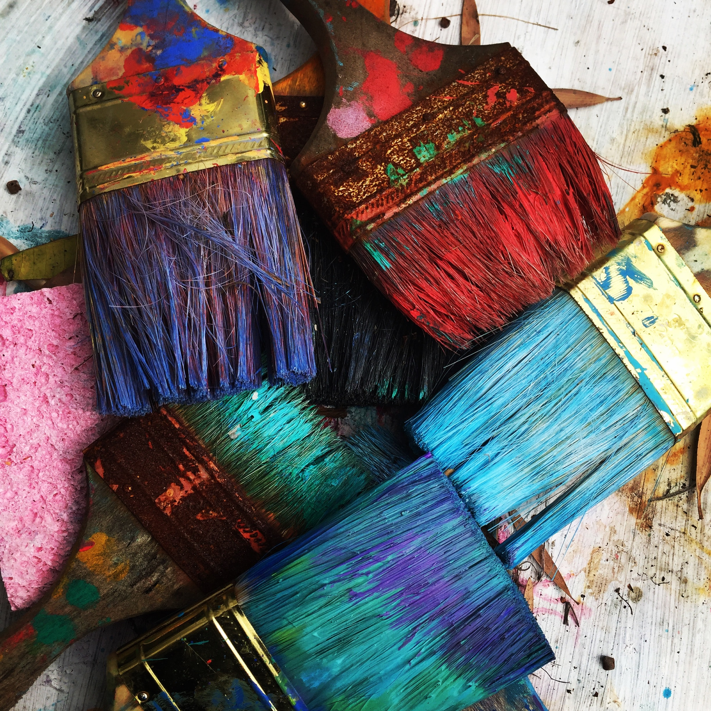
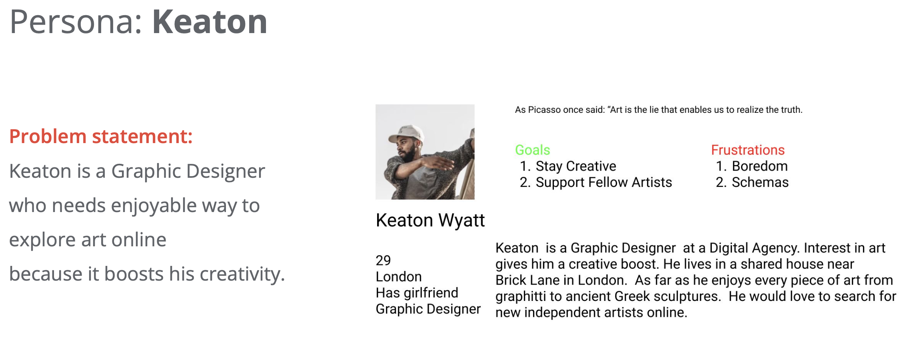
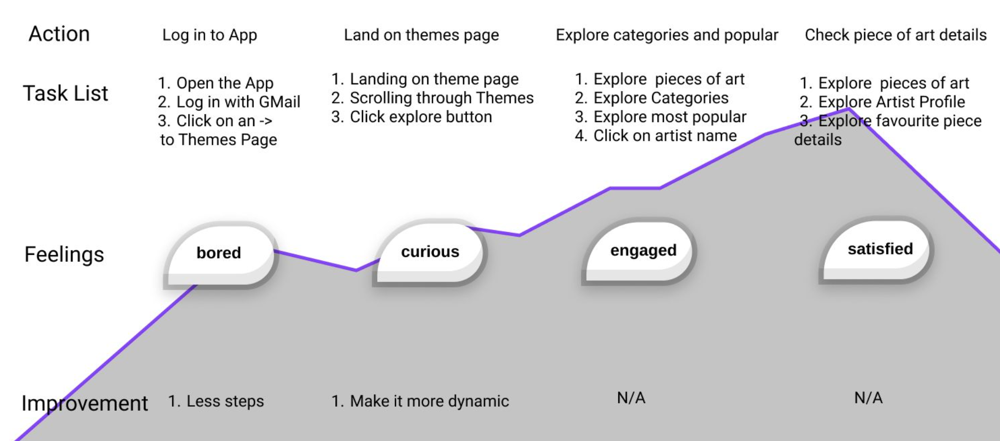
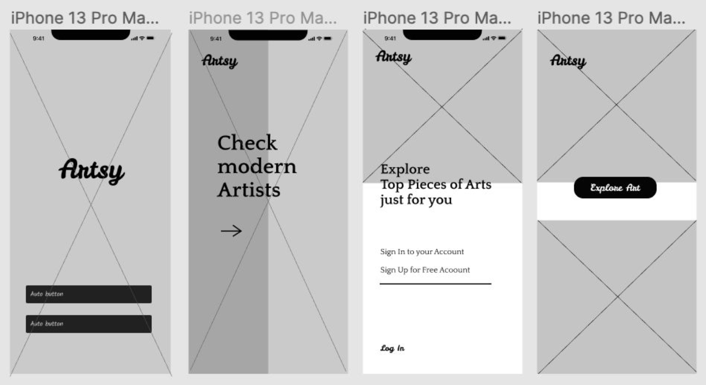
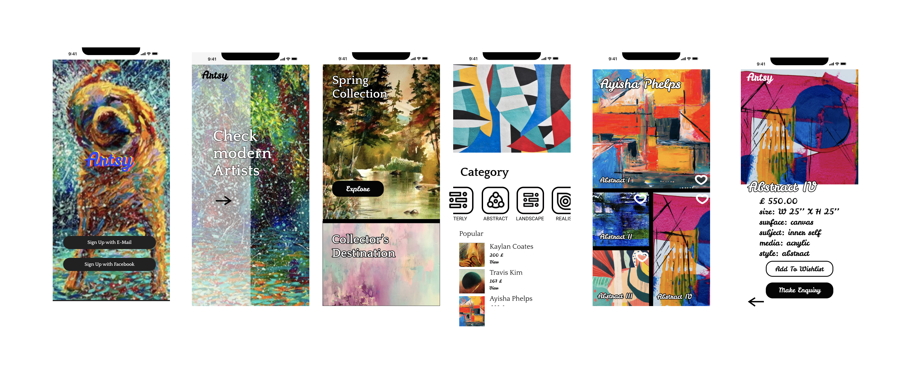

The art world is pining for in-person communication and a change of scenery.
The audience for buyers will continue to expand in 2021 as rapid technological transformation and the embrace of digital channels will remain ever present.
The art world will continue to make significant strides in advancing sustainability initiatives and reducing its carbon footprint.
Local will be the new global driven by pandemic travel restrictions.
Following the continued rise of cross-category collecting in 2020 which offered contemporary art alongside cars, and design, auctions featuring property from various departments will continue and increase in volume in 2021. Similar to museum exhibitions, more auctions will be contextualized by era or a specific theme rather than by a singular department.
The distinctions between art fairs, galleries, and auction houses will continue to blur in 2021 as the primary and secondary markets converge at an even greater scale than last year.
The demand for works by Western and emerging artists will continue to rise as well as a strong continued appreciation for classical works and luxury
Recent excitement for Black figurative paintings by young African diaspora artists, will segue into a greater interest in African art and art history, which will be enhanced by the continent’s ability to participate digitally at a greater scale than physically within the market.



